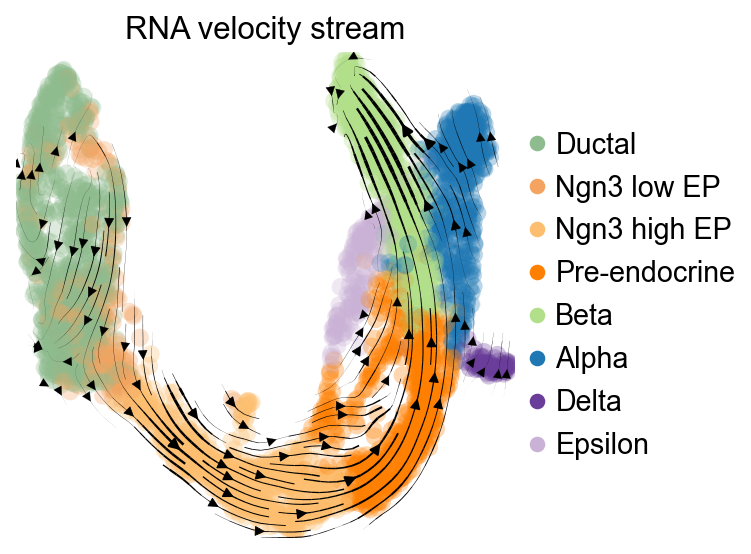
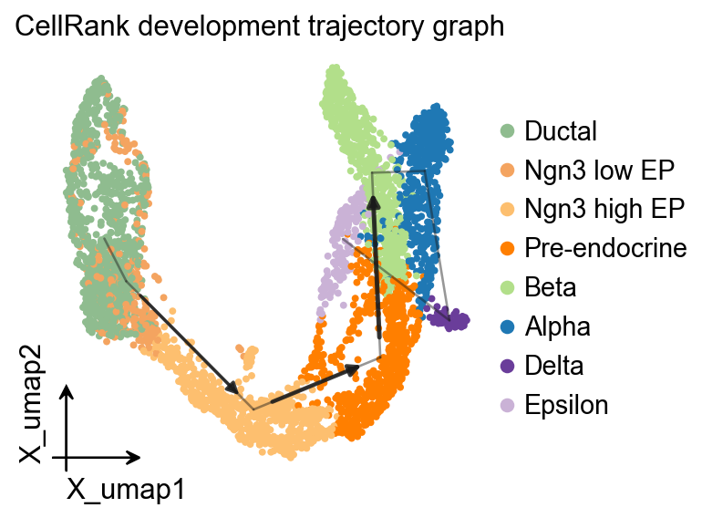
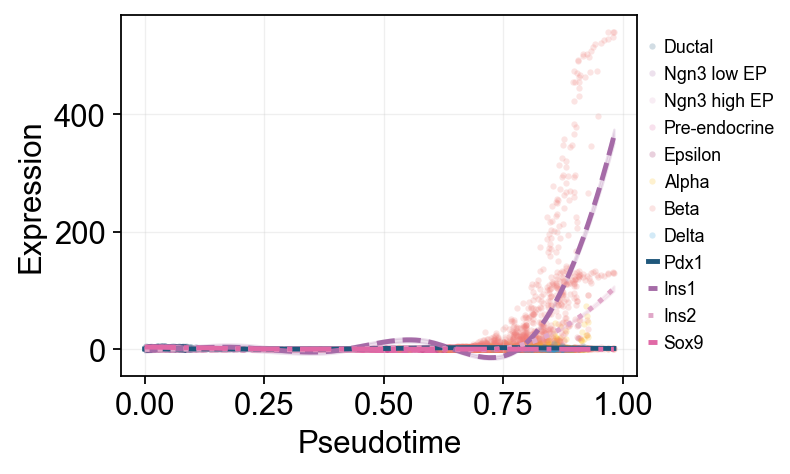
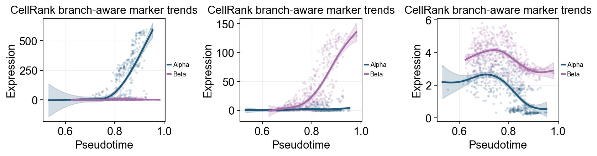
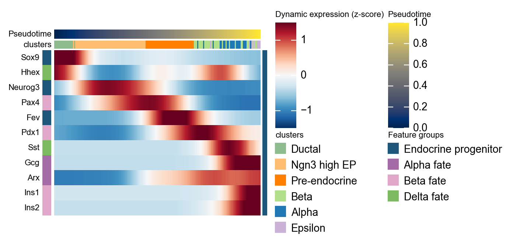

Velocity-guided CellRank Analysis#
This notebook demonstrates a velocity-informed CellRank workflow on a pancreas RNA-velocity dataset. It covers velocity preprocessing, terminal-state prediction, fate probabilities, branch-aware pseudotime visualization, and marker-gene dynamics.
Load data#
We use the pancreas developmental dataset distributed with scvelo. It contains spliced and unspliced layers required for RNA velocity analysis.
import warnings
warnings.filterwarnings("ignore", category=FutureWarning)
import omicverse as ov
import scanpy as sc
import scvelo as scv
import cellrank as cr
import numpy as np
import matplotlib.pyplot as plt
ov.plot_set(font_path='Arial')
%load_ext autoreload
%autoreload 2
🔬 Starting plot initialization...
Using already downloaded Arial font from: /var/folders/rv/3jnfbs0d6r7d0c5bfj7ft5k00000gn/T/omicverse_arial.ttf
Registered as: Arial
🧬 Detecting GPU devices…
🚫 PyTorch not available - GPU detection skipped
____ _ _ __
/ __ \____ ___ (_)___| | / /__ _____________
/ / / / __ `__ \/ / ___/ | / / _ \/ ___/ ___/ _ \
/ /_/ / / / / / / / /__ | |/ / __/ / (__ ) __/
\____/_/ /_/ /_/_/\___/ |___/\___/_/ /____/\___/
🔖 Version: 2.1.3rc1 📚 Tutorials: https://omicverse.readthedocs.io/
✅ plot_set complete.
adata = scv.datasets.pancreas()
adata
AnnData object with n_obs × n_vars = 3696 × 27998
obs: 'clusters_coarse', 'clusters', 'S_score', 'G2M_score'
var: 'highly_variable_genes'
uns: 'clusters_coarse_colors', 'clusters_colors', 'day_colors', 'neighbors', 'pca'
obsm: 'X_pca', 'X_umap'
layers: 'spliced', 'unspliced'
obsp: 'distances', 'connectivities'
ov.pl.embedding(
adata,
basis='X_umap',
color='clusters',
frameon='small',
)
{kind=link}
Estimate RNA velocity#
We keep the preprocessing intentionally compact: normalize shared counts, compute PCA/neighbors, calculate moments, estimate deterministic RNA velocity, and build the velocity graph. We also derive a development-oriented pseudotime for the downstream branch and marker-program visualizations.
scv.pp.filter_and_normalize(adata, min_shared_counts=20)
sc.pp.pca(adata)
sc.pp.neighbors(adata, n_neighbors=30, n_pcs=30)
scv.pp.moments(adata, n_pcs=None, n_neighbors=None)
scv.tl.velocity(adata, mode='deterministic')
scv.tl.velocity_graph(adata, n_jobs=1)
scv.tl.velocity_pseudotime(adata)
root_mask = adata.obs['clusters'].astype(str).eq('Ductal')
if not root_mask.any():
root_mask = adata.obs['clusters'].astype(str).eq('Ngn3 low EP')
root_cells = np.flatnonzero(root_mask.to_numpy())
root_center = np.asarray(adata.obsm['X_pca'][root_cells]).mean(axis=0)
root_index = int(
root_cells[
np.argmin(
np.linalg.norm(adata.obsm['X_pca'][root_cells] - root_center, axis=1)
)
]
)
adata.uns['iroot'] = root_index
sc.tl.diffmap(adata)
sc.tl.dpt(adata, n_dcs=10)
adata.obs['development_pseudotime'] = adata.obs['dpt_pseudotime']
Filtered out 20801 genes that are detected 20 counts (shared).
Normalized count data: X, spliced, unspliced.
computing moments based on connectivities
finished (0:00:01) --> added
'Ms' and 'Mu', moments of un/spliced abundances (adata.layers)
computing velocities
finished (0:00:00) --> added
'velocity', velocity vectors for each individual cell (adata.layers)
computing velocity graph (using 1/12 cores)
finished (0:00:05) --> added
'velocity_graph', sparse matrix with cosine correlations (adata.uns)
computing terminal states
WARNING: Uncertain or fuzzy root cell identification. Please verify.
identified 1 region of root cells and 1 region of end points .
finished (0:00:00) --> added
'root_cells', root cells of Markov diffusion process (adata.obs)
'end_points', end points of Markov diffusion process (adata.obs)
scv.pl.velocity_embedding_stream(
adata,
basis='umap',
color='clusters',
legend_loc='right',
title='RNA velocity stream',
)
computing velocity embedding
finished (0:00:00) --> added
'velocity_umap', embedded velocity vectors (adata.obsm)
{kind=link}

Build CellRank kernels#
A common setup is to blend velocity-based transitions with neighborhood connectivity so the downstream fate analysis uses both local graph structure and RNA velocity direction.
vk = cr.kernels.VelocityKernel(adata).compute_transition_matrix()
ck = cr.kernels.ConnectivityKernel(adata).compute_transition_matrix()
kernel = 0.8 * vk + 0.2 * ck
kernel
(0.8 * VelocityKernel[n=3696, model='deterministic', similarity='correlation', softmax_scale=12.543] + 0.2 * ConnectivityKernel[n=3696, dnorm=True, key='connectivities'])
Visualize the CellRank velocity kernel#
After constructing the CellRank velocity kernel, we project its transition directions onto UMAP to inspect the directionality used by the fate analysis.
vk.plot_projection(
basis='umap',
color='clusters',
legend_loc='right',
title='CellRank velocity-kernel projection',
stream=True,
size=80,
)
{kind=link}
OV trajectory graph overlay#
The development-oriented pseudotime can be used as a PAGA prior, giving a graph overlay that complements the velocity stream and CellRank kernel projection.
ov.utils.cal_paga(
adata,
use_time_prior='development_pseudotime',
vkey='velocity',
groups='clusters',
)
ov.pl.trajectory(
adata,
method='paga',
basis='X_umap',
groups='clusters',
color='clusters',
title='CellRank development trajectory graph',
)
plt.show()
running PAGA using priors: ['development_pseudotime']
finished
added
'paga/connectivities', connectivities adjacency (adata.uns)
'paga/connectivities_tree', connectivities subtree (adata.uns)
'paga/transitions_confidence', velocity transitions (adata.uns)
{kind=link}

OV trajectory overlay#
ov.pl.trajectory_overlay adds the PAGA backbone to an existing UMAP embedding.
fig, ax = plt.subplots(figsize=(4, 4))
ov.pl.embedding(
adata,
basis='X_umap',
color='clusters',
ax=ax,
show=False,
size=50,
)
ov.pl.trajectory_overlay(
adata,
ax=ax,
method='paga',
basis='X_umap',
groups='clusters',
)
ax.set_title('CellRank development trajectory overlay')
plt.show()
{kind=link}
g = cr.estimators.GPCCA(kernel)
g.compute_macrostates(n_states=6, cluster_key='clusters')
list(g.macrostates.cat.categories)
WARNING: Unable to import `petsc4py` or `slepc4py`. Using `method='brandts'`
WARNING: For `method='brandts'`, dense matrix is required. Densifying
['Epsilon', 'Alpha', 'Ductal_1', 'Ductal_2', 'Ngn3 high EP', 'Beta']
g.plot_macrostates(which='all', legend_loc='right', size=90)
{kind=link}
Identify terminal states and fate probabilities#
For this pancreas example, CellRank can automatically propose terminal states from the fitted macrostates. We then compute lineage probabilities for every cell.
g.predict_terminal_states(n_states=4)
list(g.terminal_states.cat.categories)
['Epsilon', 'Alpha', 'Beta']
g.plot_macrostates(which='terminal', legend_loc='right', size=100)
{kind=link}
g.compute_fate_probabilities(solver='direct', use_petsc=False)
g.plot_fate_probabilities(same_plot=True)
{kind=link}
adata.obs.groupby('clusters', observed=True)[
['velocity_pseudotime', 'development_pseudotime']
].median().sort_values('development_pseudotime')
velocity_pseudotime development_pseudotime
clusters
Ngn3 low EP 0.911242 0.039220
Ductal 0.908973 0.043246
Ngn3 high EP 0.937826 0.347985
Pre-endocrine 0.944476 0.634166
Beta 0.950648 0.774505
Epsilon 0.633200 0.796823
Alpha 0.911853 0.819963
Delta 0.898328 0.845001
Branch-aware stream plot along development pseudotime#
ov.pl.branch_streamplot can use the root-oriented development pseudotime together with the pancreas cluster labels. The shared endocrine progenitor states form the trunk, while the terminal endocrine fates bend into branch ribbons, giving a compact bridge between the UMAP velocity field and the CellRank fate probabilities.
fig, ax = ov.pl.branch_streamplot(
adata,
group_key='clusters',
pseudotime_key='development_pseudotime',
trunk_groups=['Ductal', 'Ngn3 low EP', 'Ngn3 high EP', 'Pre-endocrine'],
branch_center=0.62,
figsize=(6, 4),
xlabel='Development pseudotime',
show=False,
)
plt.show()
{kind=link}
adata.obs['beta_fate'] = np.asarray(g.fate_probabilities['Beta']).ravel()
ov.pl.embedding(
adata,
basis='X_umap',
color=['clusters', 'beta_fate'],
cmap='Reds',
frameon='small',
)
{kind=link}
Inspect lineage-specific gene trends#
ov.single.dynamic_features fits GAM trends along development_pseudotime, and ov.pl.dynamic_trends shows two complementary views here. The first is a global Beta-enriched view with raw points colored by clusters. The second is a branch-aware Alpha/Beta comparison.
safe_uns = {k: v for k, v in adata.uns.items() if k.endswith('_colors') or k in {'neighbors', 'umap'}}
uns_backup = adata.uns
adata.uns = safe_uns
adata_dyn = adata.copy()
adata.uns = uns_backup
adata_beta = adata_dyn[adata_dyn.obs['beta_fate'] > 0.15].copy()
beta_dyn = ov.single.dynamic_features(
adata_beta,
genes=['Pdx1', 'Ins1', 'Ins2', 'Sox9'],
pseudotime='development_pseudotime',
layer='Ms',
distribution='normal',
link='identity',
n_splines=8,
store_raw=True,
raw_obs_keys=['clusters'],
)
🔍 Dynamic feature analysis:
Views: 1 | Features: 4
Pseudotime: development_pseudotime
Stored raw obs keys: ['clusters']
Layer: Ms
GAM: normal-identity | splines=8
✅ Dynamic feature analysis completed!
✓ Successful fits: 4/4
✓ Fitted rows: 800
✓ Raw observations stored: 14380
ov.pl.dynamic_trends(
beta_dyn,
genes=['Pdx1', 'Ins1', 'Ins2', 'Sox9'],
compare_features=True,
add_point=True,
point_color_by='clusters',
line_style_by='features',
figsize=(6.2, 3.2),
linewidth=2.2,
legend_loc='right margin',
legend_fontsize=8,
)
plt.show()
🔍 Dynamic trend plotting:
Features: 4 | Groups: 1
compare_features=True | compare_groups=False
✅ Dynamic trend plotting completed!
{kind=link}

branch_clusters = [g for g in ['Alpha', 'Beta'] if g in set(adata_dyn.obs['clusters'].astype(str))]
split_mask = adata_dyn.obs['clusters'].astype(str).isin(['Ngn3 high EP', 'Pre-endocrine'])
cellrank_branch_dyn = None
cellrank_split_time = None
if len(branch_clusters) >= 2:
cellrank_branch_dyn = ov.single.dynamic_features(
adata_dyn,
genes=['Gcg', 'Ins1', 'Ins2', 'Pdx1'],
pseudotime='development_pseudotime',
layer='Ms',
groupby='clusters',
groups=branch_clusters,
distribution='normal',
link='identity',
n_splines=8,
store_raw=True,
)
cellrank_split_time = float(np.nanmedian(adata_dyn.obs.loc[split_mask, 'development_pseudotime'])) if split_mask.any() else float(np.nanmedian(adata_dyn.obs['development_pseudotime']))
else:
print('Not enough terminal clusters were found for a CellRank branch-aware comparison.')
🔍 Dynamic feature analysis:
Views: 2 | Features: 4
Pseudotime: development_pseudotime
Grouping: clusters
Layer: Ms
GAM: normal-identity | splines=8
✅ Dynamic feature analysis completed!
✓ Successful fits: 8/8
✓ Fitted rows: 1600
✓ Raw observations stored: 4288
if cellrank_branch_dyn is not None:
ov.pl.dynamic_trends(
cellrank_branch_dyn,
genes=['Gcg', 'Ins2', 'Pdx1'],
compare_groups=True,
split_time=cellrank_split_time,
shared_trunk=True,
add_point=True,
point_color_by='group',
figsize=(4.2, 3),
linewidth=2.2,
ncols=3,
legend_loc='right margin',
legend_fontsize=8,
title='CellRank branch-aware marker trends',
)
plt.show()
🔍 Dynamic trend plotting:
Features: 3 | Groups: 2
compare_features=False | compare_groups=True
✅ Dynamic trend plotting completed!
{kind=link}

Summarize marker programs with dynamic_heatmap#
The development pseudotime can also drive ov.pl.dynamic_heatmap. Here we group marker genes by endocrine program and read smoothed expression from the Ms layer generated during the scVelo moments step, so the heatmap complements the single-gene trend panels above.
cellrank_marker_modules = {
'Endocrine progenitor': ['Sox9', 'Neurog3', 'Fev'],
'Alpha fate': ['Gcg', 'Arx'],
'Beta fate': ['Pax4', 'Ins1', 'Ins2', 'Pdx1'],
'Delta fate': ['Sst', 'Hhex'],
}
cellrank_marker_modules = {
program: [gene for gene in genes if gene in adata.var_names]
for program, genes in cellrank_marker_modules.items()
}
cellrank_marker_modules = {
program: genes for program, genes in cellrank_marker_modules.items() if genes
}
cellrank_heatmap = ov.pl.dynamic_heatmap(
adata,
var_names=cellrank_marker_modules,
pseudotime='development_pseudotime',
layer='Ms',
use_cell_columns=False,
cell_annotation='clusters',
cell_bins=180,
smooth_window=17,
fitted_window=31,
figsize=(5, 4),
standard_scale='var',
cmap='RdBu_r',
use_fitted=True,
show_row_names=True,
border=False,
show=False,
)
🔍 Dynamic heatmap:
Candidate features: 11
Pseudotime: development_pseudotime
Cell annotation: clusters
use_fitted=True | cell_bins=180 | cmap=RdBu_r
✅ Dynamic heatmap completed!
✓ Matrix shape: 11 features × 176 columns
{kind=link}
